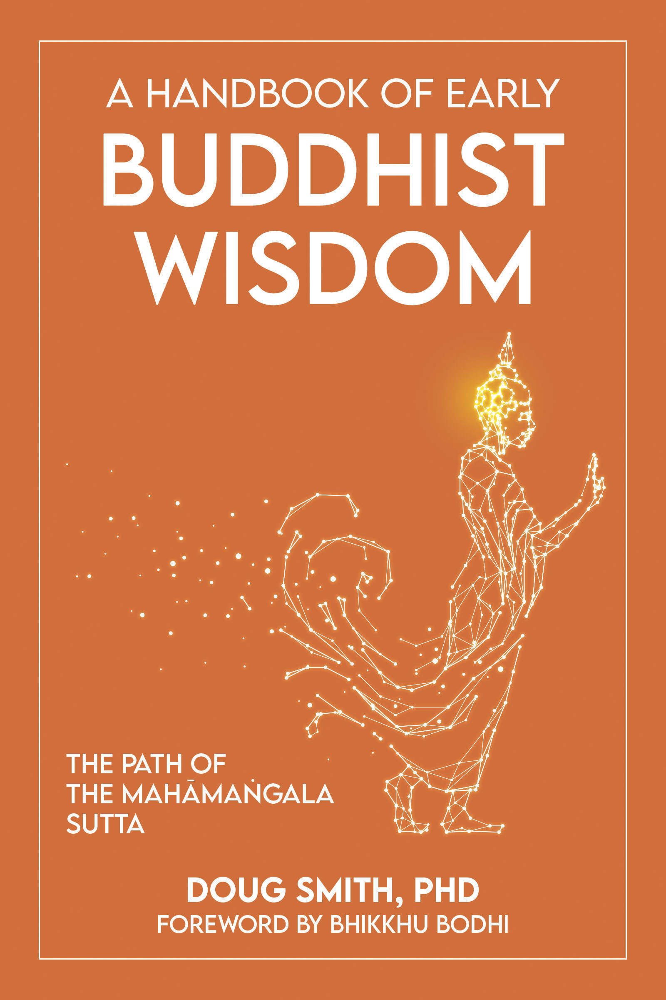

An independent scholar sharing the teachings of early Buddhism and contemporary philosophy of mind, through videos, essays, and a book.
I created Doug's Dharma on YouTube in 2017 to introduce the teachings of early Buddhism to a wide audience. I also founded the Online Dharma Institute to provide longer-form courses on early Buddhist themes.
I have a PhD in Philosophy of Mind, several scholarly publications in Buddhist Studies, and many years of practice in the Zen and Theravāda traditions. I also completed the yearlong Integrated Study and Practice Program with the Barre Center for Buddhist Studies and the New York Insight Meditation Center in 2013.
I pursue a secular practice orientation — though I welcome traditional approaches, and discuss them in my videos.
My interest is in illuminating key aspects of the dharma of early Buddhism, particularly highlighting its unique character in ways that resonate with contemporary life.
New videos out regularly, for anyone interested in how early Buddhist philosophy and practice relates to our lives today.
Complete Video IndexHundreds of videos, organized by theme.
Self-paced courses that go deeper than the videos — working carefully through the early texts and the path of practice.

A guide through one of the best-loved discourses in the Pāli Canon — the Buddha's teaching on a life of blessings. Foreword by Ven. Bhikkhu Bodhi.
Find the bookBuddhist meditation teacher Jon Aaron and I ran a podcast called Diggin' the Dharma for several years. Search it out for relaxed discussions of Buddhisty themes.
Longer written reflections on early Buddhism and its relation to contemporary questions of personal identity, artificial intelligence, cognitive psychology, and related themes.
Read on SubstackScholarly journal articles in Buddhist Studies are available to read and download.
Go to academia.eduMy work wouldn't be possible without your continued support. Join me on Patreon for occasional exclusive livestreams, ad-free and audio-only versions of my videos, along with detailed show notes and other perks.